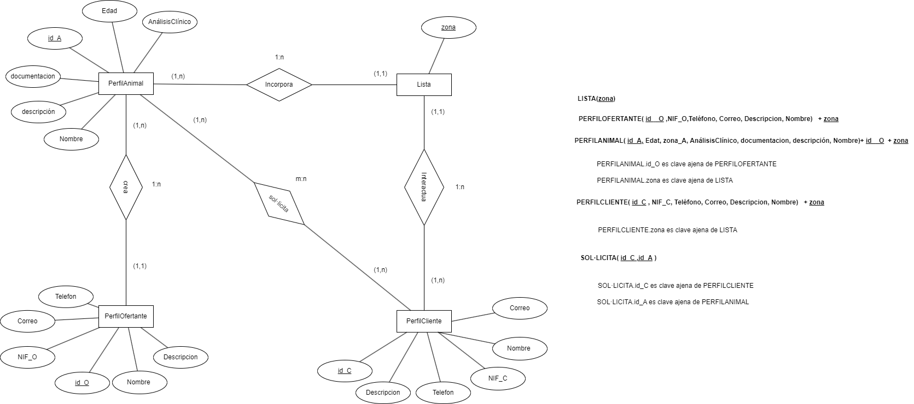
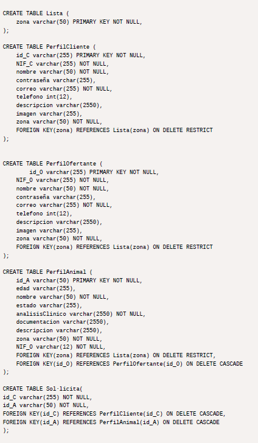
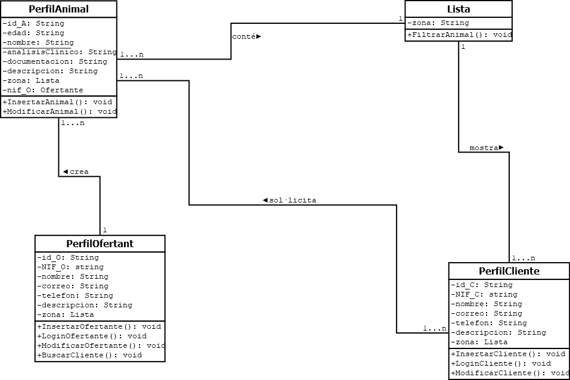
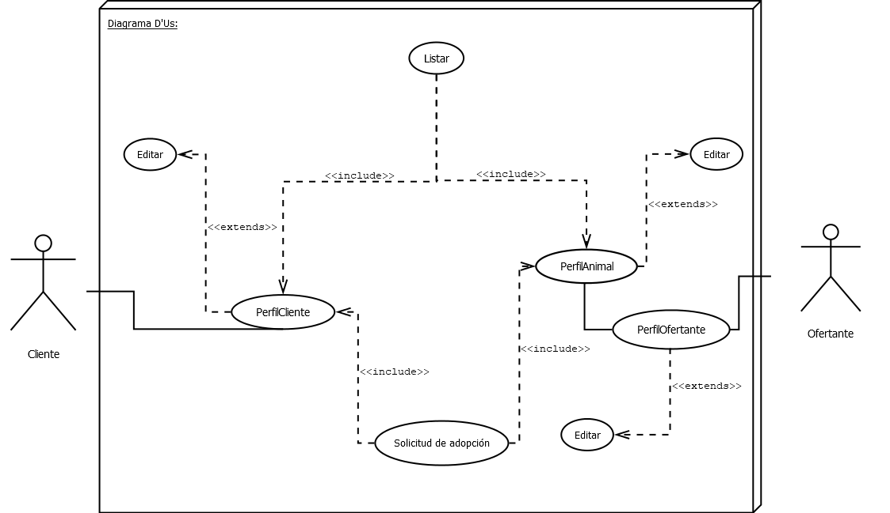

Sobre la sección de bases de datos, partimos de 4 secciones para realizar el proceso completo:
Diseño conceptual (entidad-relación) y modelo lógico-relacional
En este caso presentamos 5 endidades: PerfilAnimal, PerfilCliente, PerfilOfertante y Lista.
Cada cual de estas mismas se relacionan entre si separandose en dos secciones, la del ofertante i la de cliente.
En el caso de este diagrama, se encuentran:
3 relaciones 1:n
1 relación m:n

Diseño físico

En el caso del diseño físico, o lo que es lo mismo,
la propia creación de la Base de Datos.
En pocas palabras, es el desarrollo de las entidades
mencionadas en el diagrama anterior.
Para poder convertir el diagrama a físico se trata
de un proceso simple, únicamente hemos de convertir
las claves ajenas en un mecanismo para relacionar
las tablas.
En este caso con los Foreign key de las
claves primarias.
Además de las relaciones, tambien hemos introducido
los términos básicos de lo que se almacenará en
es base de datos especificando los tipos de
carácteres que puede aceptar cada dato y la
longitud o cantidad de información que puede llegar
a almacenar.
Seguidamente se ha intoducido que datos son
indespensables para el funcionamiento de la
aplicación, en palabras mas tecnicas, he
indicado que valores tienen permitido ser nulos y
cuales no.
Y por último he especificado que parametros deben
seguir los datos en caso de su alteración, es decir,
especificar si se propaga el cambio o si se
restringe mediante los comandos on delete
restrict/cascade.
Diagrama de Clases

En el diagrama que se muestra en la parte superior, no solo se recopilan los datos a almacenar de cada apartado,
sino también cada método que contendrán las partes de la aplicación.
Es decir, preestablece las funciones que se accionaran en las pestañas donde aparezcan los elementos,
delcarando así el funcionamiento básico de cada parte de la app.
Y por último, en un aspecto más teórico, la dirección entre las entidades se ha establecido en respecto al
elemento que interactúa primordialmente sobre al que recibe la acción o es un actor más secundario a la
hora del funcionamiento.
Diagrama de Casos de Uso

Finalmente, para interpretar el diagrama de uso de forma simple:
· Muestra las partes esenciales, es decir, Crear la cuenta(Sea la de Ofertante o la de Cliente)
y Configurar los perfiles (Tanto el de Cliente como el de los Animales a Adoptar)
Lo único que los diferencia es el tipo de usuario que puede crear cada uno de ellos.
· Ademas de eso, encontramos las relaciones "include", que son aquellas que tienen una condición indispensable para
que esta pueda efectuarse adecuadamente. En este caso, los Perfiles deben estar definidos para que se puedan printar
y/o interactuar.
· Y por último, estan las relaciones "extends" que son aquellas acciones que puedes hacer pero
no tienen porque efectuarse obligatoriamente, en este caso, la edición de los perfiles, que se pueden hacer o no la
cantidad de veces que se precisen.